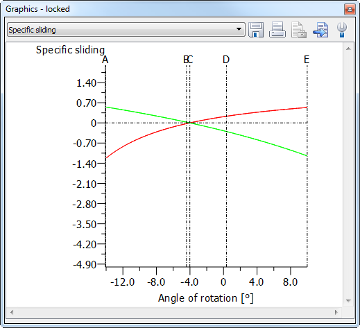
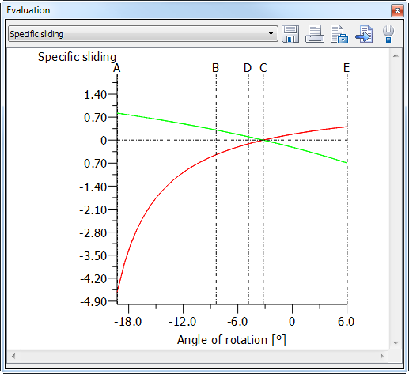
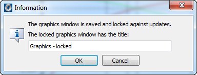
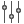

|
|
|


工具栏和上下文菜单
使用工具栏中的选择列表可在一组图形之间切换。您还将看到用于保存、打印和锁定图形的各种图标，以及用于显示或灰显其属性的功能。
将图形另存为
这将图形以 DXF、IGES 或其他图像或文本格式保存，并使用您在此处输入的名称。
将图表保存为 DXF 文件通常会在图表坐标轴单位与 DXF 文件使用的单位之间产生冲突。因此，当您保存图表时，程序会打开一个对话框，可在其中指定图表要投影到文件中的绘图区域。
打印图形
打印图形的当前部分。图形下方的信息由 graph*.rpt 报告模板定义（参见"报告模板"章）。
锁定
这对于比较两个计算结果很有用。通过这种方式，例如，您可以为某个轮齿场景生成一个 图形，锁定该图形，然后在更改齿轮参数后，打开一个显示新计算结果的新图形窗口。被锁定的窗口将不再更新。


图 4.5：锁定图形窗口（a）锁定的窗口和（b）带有新计算结果的窗口
当您锁定图形窗口时，将打开一个对话框，您可以在其中输入窗口标题。这使您更容易比较不同的图形。

图4.6：输入窗口标题的对话框窗口

属性
这会在同一窗口中打开一个列表，其中包含当前图形的属性（参见"属性"章）。
视频录制
开始记录 3D 图形的视频。当启用视频录制时，会记录图形的所有动画和运动。再次单击以停止录制。之后可保存或删除视频文件。
在视频录制处于活动状态时，图形的大小不能更改。
Tool bar and context menu
Use the selection list in the tool bar to switch from one graphic to another in a group. You will also see various icons for saving, printing and locking a graphic, and also functions for displaying or graying out its properties.
Save graphic as
This saves the graphic as a DXF, IGES or other image or text format, with the name you enter here.
Saving diagrams in a DXF file usually creates a conflict between the diagram axis units and the unit used in the DXF file. For this reason, when you save a diagram, the program opens a dialog in which you can specify the drawing area to which the diagram is to be projected, in the file.
Print graphic
Prints the current section of the graphic. The information underneath the graphic is defined by graph*.rpt report templates (see chapter Report templates).
Lock
This is useful for comparing two calculation results. In this way, you can, for example, generate a graphic for a toothing scenario, lock this graphic and then, after having changed the gear parameters, open a new graphics window that shows the new calculation results. The locked window will no longer be updated.
Figure 4.5: Locking graphics windows (a) Locked window and (b) Window with new calculation results
When you lock a graphics window, a dialog will open, in which you can enter a title for the window. This makes it easier for you to compare different graphics.
Figure 4.6: Dialog window for inputting the window title
Properties
This opens a list with the Properties (see chapter Properties) of the current graphic in the same window.
Video recording
Starts recording a video of the 3D graphic. All of the graphic's animations and movements are recorded when video recording is enabled. Click again to stop recording. You can then either save or delete the video file.
The size of the graphic cannot be changed while video recording is active.